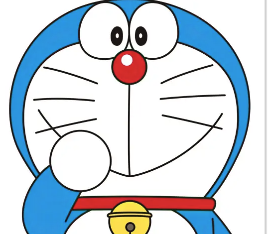

DSC 106 Lab Portfolio
Doraemon
A friendly robot cat from the twenty-second century who specializes in problem-solving, gadget delivery, and helping Nobita survive everyday life.
This website reimagines a personal portfolio as Doraemon's digital home base: part introduction, part gadget showcase, and part future-ready resume.

Current Mission
Doraemon's main goal is simple: keep the future bright by helping friends make better choices in the present. That means offering clever tools, emotional support, and the occasional emergency rescue when a school day spins out of control.
Signature Skills
- Future gadget curation for fast, imaginative problem-solving
- Calm coaching during high-stress homework or friendship crises
- Time-travel logistics and mission planning
- Quick adaptation when plans inevitably go wrong
Favorite Things
- Dorayaki after a long day of saving the timeline
- Anywhere Door shortcuts that beat public transit
- Helping friends grow into kinder and braver people
- Organized storage for a very crowded four-dimensional pocket